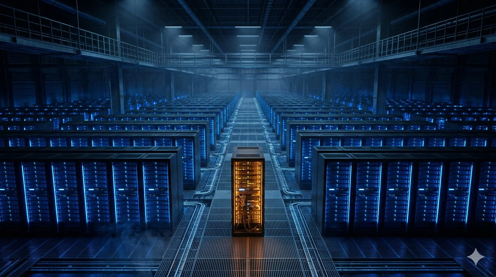

On April 15, 2026, Jensen Huang sat down with Dwarkesh Patel for what was meant to be a measured defense of Nvidia’s competitive position [1]. Nvidia had just closed fiscal 2026 with $215.9 billion in revenue, $193.7 billion in data center, and a full-year GAAP gross margin of 71.1% [2]. The brief was clear: acknowledge the alternatives, reassert the moat, reassure the analysts. Asked why Anthropic had committed to multi-gigawatt deployments on Google TPU and Broadcom-designed silicon in October 2025 [3] — when Nvidia’s own benchmarks claim the best price-performance in the market — Jensen reached for the simplest possible denial.
“Anthropic is a unique instance, not a trend,” he said [1]. Then, warming to the argument, he went further. Without Anthropic, he asked, why would there be any TPU growth at all? Why would there be any Trainium growth at all? One hundred percent Anthropic, in both cases. One customer.
Jensen was speaking in the context of external, third-party commercial demand — the only demand that tells you whether hyperscaler custom silicon has broken out of single-company use. Google’s internal TPU footprint (Search, Ads, YouTube, Gemini serving) dwarfs any outside customer and was never in question. The concession that matters is that outside Google’s and AWS’s own walls, TPU and Trainium growth as training platforms is one lab.
The quote was meant to shrink the alt-silicon story. It succeeded in shrinking it so completely that it confirmed the single-customer concentration the “everyone’s a chip company” narrative was designed to obscure. Two of the most-hyped custom silicon programs in the industry are, by the CEO of the market leader’s own admission, dependent on a single AI lab. If that lab changes its capital structure, slows down, or rebalances its next generation toward Nvidia, external TPU, and external Trainium revenue go with it. The CEO of the market leader said this out loud, on the record, twice across two segments of the same interview. A careful communicator could argue this was deliberate narrative-setting rather than Streisand — Jensen is meticulous, and the framing locks in a clean “second trend starting” storyline if a second lab emerges. Either read sharpens the point. Deliberate or accidental, the concession is that alt-silicon growth is a capital-structure phenomenon concentrated in one customer, not a technology wave.
The piece that follows takes Jensen seriously on the concentration, and then asks the question he did not want to be asked.If alt-silicon growth is one customer, what produced that customer? And what conditions would produce the next one?
The engineering is real. The question is what it replaces.
The press cycle around custom AI silicon has been continuous since late 2025. Meta is shipping multiple MTIA generations at scale for ranking and is now deploying them for some generative-AI inference [4]. Microsoft rolled Maia 200 into production Azure clusters through the winter [5]. Anthropic’s engineers are writing low-level kernels that interface directly with AWS Trainium and contributing to the Neuron stack [6]. OpenAI’s Broadcom-designed accelerator has been taped out and is scheduled for deployment at 10 gigawatts starting in 2026 [7]. Tesla taped out its AI5 chip on April 15 and announced AI6 and Dojo 3 are in development [8]. Broadcom closed Q1 FY2026 with $8.4 billion in AI revenue, up 106% YoY, and disclosed a $73 billion AI backlog [9]. Google’s Gemini 3, launched November 18, 2025, was trained on Google’s TPUs per Google’s public framing and Jeff Dean’s November 22 Stanford presentation; Google has not published a granular silicon-mix disclosure [10].
These are not press releases. They are real engineering, at real silicon teams, shipping on real timelines. Dismissing them is a mistake. So is assuming they substitute for what came before.
The market has been pricing the second possibility. Nvidia stock fell roughly 12% across November 2025, with a single-day drawdown of as much as 7% intraday on November 25 that wiped out roughly $250 billion in market cap, triggered by The Information’s report that Meta was evaluating TPU deployment from 2027, compounding the Gemini 3 launch a week earlier [11]. The sell-side was not unified: Bernstein’s Stacy Rasgon, Melius’s Ben Reitzes, and Evercore’s Mark Lipacis each published notes acknowledging additivity at the megawatt layer while flagging concentration and pull-forward risk. The bearish version the drawdown priced in more aggressively than any published note: Broadcom’s $73 billion AI backlog — disclosed December 11, 2025 as spanning “over the next six quarters” and flagged by Hock Tan as “a minimum” [9] — as the counterweight to Nvidia’s $95.2 billion in purchase and capacity commitments in the FY2026 10-K [12]. The implicit trade is that custom silicon is substituting for Nvidia at the hyperscaler level, and Nvidia’s growth has to slow.
The deployment data says otherwise. On February 24, 2026, Meta announced a multi-year, multi-generation Instinct agreement with AMD for 6 gigawatts of GPUs, with the first 1-gigawatt tranche on MI450 and subsequent tranches spanning future Instinct generations — at a press-estimated $60 billion or so over five years (AMD has not disclosed a dollar value; CFO Jean Hu described it as “double-digit billions per gigawatt”) and a performance-based warrant granting Meta up to 160 million AMD shares, gated on three concurrent conditions (GPU shipment milestones, AMD share-price thresholds with the final tranche at $600, and Meta technical and commercial milestones), worth roughly 10% AMD equity at full vesting [13].
One week earlier, Meta signed a separate multi-year commitment with Nvidia for millions of GPUs [14]. Meta’s forward 2026 capex guidance is $115 to $135 billion, up from $72 billion in actuals in 2025 [15]. Both bets grow simultaneously.
Microsoft’s Q2 FY2026 capex came in at $37.5 billion — a quarterly record. Two-thirds went to GPUs and CPUs, according to Amy Hood [16]. Microsoft is deploying Maia 200 in production while buying Nvidia at a pace that would have been unthinkable eighteen months ago.
Nvidia itself grew fiscal 2026 data center revenue 68% year over year to $193.7 billion [2]. Its forward supply commitments grew faster: from $16.1 billion at the prior year-end to $95.2 billion at the close of FY2026 — roughly 5.9x, or nearly nine times the revenue growth rate [12]. That gap is itself interpretable. Read charitably, it reflects Nvidia pre-booking TSMC CoWoS-L capacity for H2 2026 Vera Rubin deliveries and HBM4 supply through 2027. Read skeptically, it is pull-forward that has to be digested if AI capex growth decelerates before commitments convert to shipments. Either read is compatible with the additive thesis; neither vindicates it automatically.
This is the core fact the market is misreading, and the argument this piece is built around.Custom silicon is real. It is not displacing Nvidia. It is being added on top of Nvidia purchases, at every hyperscaler except one.That distinction — between substitution and addition — determines whether Nvidia’s concentration risk is easing or about to break. Additive custom silicon leaves Nvidia growth intact as the AI workload itself grows faster than custom silicon can absorb. Substitutive custom silicon caps Nvidia growth even as the workload grows. Right now, the data is almost entirely additive. Call this theAdditive-vs-Substitutive Test— the first filter every hyperscaler silicon announcement should pass through, answered every ninety days by the quarterly capex breakouts. So far, with one exception, the answer is addition. And Jensen’s Dwarkesh admission, read carefully, explains why.
Two refinements sharpen the picture. First, additive deployment depends on workload growth outrunning custom silicon’s absorption rate — a bet on the AI capex supercycle continuing. If frontier training hits a scaling plateau in 2027 and AI capex growth drops from roughly 50% to 15% year over year, the same custom silicon plans that are additive today become substitutive tomorrow — same MTIA, same Maia, same Trainium2, cutting into an Nvidia share that can no longer grow its way around them. The additive story is growth-rate-dependent, not baked into the architecture.
Second, additive in megawatts is not additive in Nvidia’s revenue pool. Much of what hyperscalers spend on Broadcom XPU alongside Blackwell is spending Nvidia would otherwise have captured, though a portion of custom silicon demand — Meta’s ad-ranking workloads in particular — was never competitive for Nvidia anyway. Broadcom’s consolidated gross margin ran at 77% in Q1 FY2026, but full AI rack systems — where Broadcom resells the expensive HBM memory, substrates, and advanced packaging it buys from third-party suppliers rather than earning its usual margin on chip design alone — carry materially lower margins. CFO Kirsten Spears guided on the December 11, 2025, Q4 FY2025 call to roughly 100 basis points of sequential gross-margin compression entering Q1 FY2026 as rack-scale mix grew; on the March 4 Q1 call, she softened it, telling analysts the impact “is actually not going to be substantial at all.” UBS’s Timothy Arcuri pressed Hock Tan on that same Q1 call, framing rack-scale margins at “maybe 45%, 50%”; Tan rejected the framing, telling Arcuri he “must be a bit hallucinating” [9].
Nvidia’s data center segment carries a materially higher gross-margin structure than a pass-through-heavy XPU system [2]. Compute deployment can grow at every hyperscaler while Nvidia’s share of the capex dollar compresses, which is the scenario the market is actually pricing when it sells Nvidia on a Google announcement. Additivity in megawatts does not mean additivity in margin.
Google is the exception that proves the rule.
Google is that exception. Gemini 3 was trained entirely on TPUs, and this is load-bearing not because the chips are better — Nvidia still insists it wins on price-performance, and the alt-silicon camp has not yet accepted Jensen’s public invitation to publish comparative results on MLPerf or InferenceMAX [1]. It is load-bearing because Google has had a decade to do so. The first TPU was deployed internally in 2015. Ten years of hardware generations, the XLA compiler, and JAX. Gemini 3 was not the moment Google pivoted away from Nvidia. It was the moment the public caught up to a migration that had already been completed within the company, long before the model launched.
No other hyperscaler has a decade. AWS announced Trainium in 2020 and shipped its first Trn1 instances in October 2022. Microsoft began talking about Athena, the project that became Maia, in 2022. Meta’s MTIA program began serious deployment in 2023, and its first use of generative AI training is only now starting [4]. All of these programs are four years old or less. Google’s is ten. The gap is not technical genius; it is that Google built the software stack before anyone else thought they needed to, and had the internal workload volume to justify hardware iteration when no one else would have seen the return.
The Google exception matters because it sets the bar for what “full-stack silicon exit” actually requires: a decade of compounding software investment, a vertically integrated model organization that designs training code against the hardware rather than PyTorch-on-CUDA defaults, and the balance sheet to absorb the opportunity cost of running below Nvidia performance during the transition. That is a short list. It contains exactly one company. Everyone else operates inside a different constraint. Why a partial exit happened at all is a different question, and the answer flips from engineering to finance.
Why there is only one Anthropic.
Which brings us back to Jensen’s concession. If TPU and Trainium external growth is one customer, why that customer? The answer is not that Anthropic found Trainium and TPU to be objectively better chips than Blackwell. The answer, as Jensen himself explained in the next breath on the Dwarkesh podcast, is capital structure.
Jensen’s account is worth reconstructing because it is the most candid public explanation by a Nvidia executive of how the alt-silicon market was created. By his telling, Anthropic in its early growth phase needed five to ten billion dollars of equity investment to fund its compute consumption — a scale no venture capital firm would commit to an unprofitable AI lab. Google could write that check. Amazon could write that check. Nvidia, at the time, could not. Nvidia had never done large equity investments and had not internalized that the labs’ capital structure was inseparable from their silicon choice. By the time Nvidia understood this, Anthropic had already signed the equity-for-compute deals that locked its training on TPU and, later, on Trainium. Jensen described this as his miss [1].
The implication is the thesis of the piece. Anthropic’s silicon path was not decided by chip quality. It was decided by who could write the equity-for-compute check at the moment the check was needed.The alt-silicon market was not a technology event. It was a capital-structure event— theCapital-Structure-Not-Chip-Quality Mechanism, the second framework the reader can take away. Large labs needing billions in equity against compute consumption do not evaluate silicon options on FLOPs per dollar. They evaluate which counterparty can fund them for the next 18 months, and they accept whatever silicon comes with it.
Read through this lens, Jensen’s “unique instance” line flips meaning. Anthropic is not unique because its leadership preferred exotic silicon. Anthropic is unique because its capital needs and timing lined up with a hyperscaler that had both the chips and the checkbook. OpenAI went the other way — taking Microsoft’s capital, contingent on Azure compute, which at the time was overwhelmingly Nvidia. Azure’s own alt-silicon program (Athena, later Maia) had been in development since 2022 but was not production-ready for frontier training at the decisive capital moments. Compounding the capital path, OpenAI’s training stack had co-evolved with Nvidia from GPT-2 onward: CUDA kernels, Nvidia-native distributed training, and inference tuned to Nvidia's topology. Anthropic, founded in 2021 with a clean start, had no comparable stack to port. The result: OpenAI trained on Nvidia, and its aggregate compute posture, as Jensen conceded, remains vastly Nvidia-weighted even with the AMD MI450 deal of October 2025 and Broadcom-designed custom silicon now in production [7][14].
The forward-looking question is: who is the next Anthropic? Not in the sense of capability, but in the sense of the capital-structure setup — a lab needing five to ten billion in equity for compute, arriving at a moment when a non-Nvidia hyperscaler can write the check and Nvidia cannot. The answer, increasingly, is: nobody, because the arbitrage is closing on both sides.
It is closing from Nvidia’s side because Nvidia is now writing those checks itself. The $30 billion equity stake Nvidia finalized in OpenAI as part of that company’s $110 billion round earlier in 2026 — a scaled-back structure that succeeded the “up to $100 billion” infrastructure letter of intent Nvidia signaled in September 2025 — and the up-to-$10 billion Anthropic stake announced November 18, 2025 alongside Microsoft’s own up-to-$5 billion commitment and a $30 billion Anthropic-Azure compute deal [17] are the mechanism’s correction. Jensen told the Morgan Stanley Technology, Media & Telecom Conference on March 4, 2026, that both investments are likely Nvidia’s last before those companies go public, and returned to the theme on Dwarkesh a month later [17].
The arbitrage is also closing from the other side — not because Google and Amazon stopped writing compute-linked equity checks, but because the number of counterparties willing to write them proliferated. Microsoft’s commercial RPO backlog reached $625 billion by year-end 2025, with approximately 45% tied to OpenAI per analyst estimates (Microsoft has not broken this out) [16]. Oracle took its slice through Stargate. Google continues writing checks to Anthropic, linked to the TPU [3]. The arbitrage is no longer a narrow window between Nvidia’s old reluctance and its new willingness. It is a multi-counterparty equity-for-compute market that any sufficiently capital-hungry frontier lab can draw against, with silicon attached to whichever counterparty wins the allocation. The next Anthropic does not need to exist as a single, uniquely situated actor, because the arrangement that created the first one has become the default funding model. And labs that draw against this market are multi-sourced from day one — training on TPU, inferring on Trainium, committing to Nvidia for next-generation capacity. That spreads silicon share across vendors; it does not concentrate it on any single alt-silicon platform.
This is why “Anthropic is not a trend” may well be right, but not for the reason Jensen intended. The concentration is not concentrating further because labs with Anthropic’s capital profile are now routinely multi-sourced — a training cluster on TPU, an inference posture on Trainium, a compute commitment on Nvidia, every vendor paid. Whether Anthropic itself rebalances back toward Nvidia in its next generation — the company has simultaneously committed to multi-gigawatt Grace Blackwell and Vera Rubin deployments alongside its Trainium and TPU expansions [17] — will determine whether the “one customer” even stays at one in the way Jensen meant.
What is actually being deployed.
With that frame in place, the deployment picture becomes legible. Each hyperscaler silicon program deserves a clean, honest reading, because press coverage has systematically blurred the distinction between inference and training, between announced and shipped products, and between generative-AI workloads and older recommendation workloads that happen to use the same silicon family.
Meta’s MTIA program is the most mature of the non-Google efforts, with four generations shipped and hundreds of thousands of units deployed for ads ranking and feed personalization. MTIA is not yet the primary training platform for Meta’s frontier generative models — that remains Nvidia and increasingly AMD MI450-class silicon under the 6-gigawatt February agreement [13]. Meta’s own engineers describe MTIA as a ranking workhorse progressing toward generative-AI inference. Meta formalized this trajectory on April 14, 2026 — one day before Jensen recorded with Dwarkesh — announcing an expanded Broadcom partnership through 2029 covering multiple MTIA generations, with a 1-gigawatt commitment Meta described as the opening installment of a multi-gigawatt buildout, and with MTIA — per Broadcom’s announcement — becoming the first AI silicon on a 2nm process [4]. All of that capacity sits inside Meta’s 2026 capex envelope alongside, not in place of, the continued Nvidia commitments and the 6-gigawatt AMD Instinct deployment. Calling Meta a chip company is accurate. Calling Meta’s chip program a substitute for its Nvidia and AMD commitments misreads the capex guide: $115 to $135 billion in 2026, with growth across both custom and merchant silicon [15].
Microsoft’s Maia 200 entered production Azure clusters through the winter, in the US Central region, supplying only a fraction of Azure’s AI capacity. The deployment-level truth of the Microsoft bet is the $37.5 billion quarterly capex figure, two-thirds of which is allocated to GPU and CPU, disclosed on the Q2 FY2026 earnings call [16]. Satya Nadella disclosed on that same call that Microsoft added nearly one gigawatt of AI capacity in the quarter. Almost all of that gigawatt is not Maia.
AWS Trainium is the alt-silicon platform with the deepest model-level co-design story. Anthropic’s engineers are explicitly contributing to the Neuron software stack and writing kernels that interface directly with Trainium silicon [6]. Project Rainier — the 500,000-chip Trainium2 cluster in New Carlisle, Indiana — was activated in October 2025 and, per AWS CEO Matt Garman at launch, is running and training Anthropic’s models today. AWS is committed to doubling it to one million Trainium2 chips by the end of 2025 [18]. This is the strongest non-Google case for model-platform convergence on non-Nvidia silicon. It is also, per Jensen’s admission, the entire external Trainium adoption story.
OpenAI’s custom silicon program with Broadcom, announced October 2025 as a term sheet for 10 gigawatts starting in 2026, is the largest single non-Nvidia commitment by any AI lab — though Hock Tan on the Q1 FY2026 call specified OpenAI contributions of only “over 1 gigawatt” in 2027, back-weighting the remaining nine gigawatts into 2028 and 2029 [7]. OpenAI is also the anchor customer for a 6-gigawatt multi-generation AMD Instinct deployment announced on October 6, 2025 (the first gigawatt on MI450, with future generations to follow) [19], and the counterparty to Nvidia’s $30 billion equity investment, accompanied by a Grace Blackwell/Vera Rubin compute commitment [17]. Aggregating publicly announced OpenAI compute commitments across counterparties — Microsoft Azure, Oracle’s Stargate arrangement, AMD, Broadcom, and Nvidia — produces a disclosed sum somewhere in the $800 billion to $1.2 trillion range over 2025–2035, depending on how much weight the reader gives Stargate’s $500 billion headline (aspirational: Musk has publicly disputed its funding and SoftBank’s underwriting remains uncertain) [20]. Even discounting Stargate entirely, the aggregate is well north of half a trillion dollars. Every major vendor is represented. Nvidia remains the largest line item. This is additivity on an Olympian scale.
Tesla’s AI5 tape-out on April 15, 2026 is a dual-purpose chip Musk has positioned for both Optimus inference and data-center training — in his own words, “AI5, AI6 and subsequent chips will be excellent for inference and at least pretty good for training,” with Dojo’s training mission persisting “in the form of a large number of AI6 SoCs on a single board” [8]. It is not a pure FSD accelerator, but it is also not yet shipping at scale or training any xAI frontier model. xAI’s actual frontier training cluster, Colossus 2, is Nvidia-based: approximately 555,000 Nvidia GPUs across H100, H200, and Blackwell generations at the Memphis complex, with Musk targeting 1.5 gigawatts by April 2026 (independent satellite-based observers have flagged delivered capacity as materially below the stated target) [21]. The company most stylistically associated with the “build our own chips” narrative is, at the frontier training layer today, entirely Nvidia.
Pulling these five programs together, the pattern is consistent. Real engineering. Real silicon. Narrow deployments relative to the overall AI capacity being stood up. Additive to Nvidia, not substitutive. The Google exception is not evidence the pattern is changing; it is evidence of what it takes to be the exception, and no other hyperscaler has the ingredients.
The deployment picture explains where we are. The real question is: where are we going?
The lock-in is migrating up the stack.
The silicon story does not end here. The deeper argument — the one Jensen made on the same Dwarkesh podcast, in a completely different context, without noticing what he was conceding — is that the competitive battleground is moving from the kernel layer to the model architecture layer.
For most of 2023 and 2024, the dominant framing of Nvidia’s moat was CUDA. The argument ran: even if competitors build comparable silicon, the CUDA ecosystem, with its libraries, kernels, compiler toolchain, and fifteen years of accumulated developer familiarity, is what keeps frontier labs on Nvidia hardware. Switching costs were described at the level of writing new attention kernels, porting custom CUDA extensions, and rewriting inference serving infrastructure.
This argument has become progressively less true. OpenAI wrote Triton to abstract kernel generation across backends; Triton’s backend, per Jensen’s own description, contains substantial Nvidia-contributed technology, and it is also the path through which OpenAI compiles for non-Nvidia targets [1]. Anthropic writes kernels directly to Trainium with AWS's help and feeds architectural input into Trainium3 [6]. Google’s JAX and XLA stack is co-designed primarily against TPU. The hyperscaler labs have staff who can write low-level kernel code for multiple silicon targets, and the institutional capacity to do it. Jensen acknowledged this on Dwarkesh: Nvidia’s kernel engineers are deeply embedded inside their AI lab partners’ stacks, and “It’s not unusual that by the time we’re done optimizing their stack or optimizing a particular kernel, their model sped up by 3x, 2x, 50%” [1]. That is a description of a joint engineering relationship, not a lock-in through opacity. An Nvidia reading would note that the embedding itself is the moat — the density of engineering relationships does not require CUDA exclusivity to function. Both readings are defensible. What is not defensible is the 2023-era claim that CUDA kernels themselves are the primary barrier. The CUDA kernel moat is real but smaller than it was.
The real moat is now forming at the model architecture layer, and the evidence comes from the places the industry pretends not to see. In August 2025, DeepSeek released V3.1 with a numerical format alignment called UE8M0 FP8, co-designed with forthcoming Chinese domestic silicon. In a top-pinned comment on its official WeChat account, DeepSeek clarified that UE8M0 FP8 is, in the company’s own words, “designed for the next generation of domestically produced chips to be released soon” [22]. A frontier Chinese lab is designing its model’s numerical representation around a specific upcoming domestic silicon architecture. The model is being co-designed with the hardware. The portability story — train on Nvidia, serve on anything — does not hold at this level of precision co-design.
The DeepSeek case is not isolated. Gemini 3 is co-designed with TPU’s interchip interconnect topology. Anthropic is not just writing kernels for Trainium; it is feeding architectural requirements into Trainium3 [6]. Each case is a model whose training path is tuned to the primitives of a specific hardware family.
The industry tried to standardize low-precision formats in 2023 under the Open Compute Project’s Microscaling (MX) specification, published September 2023, with scale-factor formats including UE8M0 — the unsigned 8-bit power-of-2 scale DeepSeek referenced. That effort partially worked and partially fragmented. Both Nvidia’s Blackwell and forthcoming Chinese domestic accelerators implement MX-compatible FP8. But the model-layer decision of which MX variant to tune to, and which hardware’s tensor-core quirks to target, still produces silicon-specific optimization paths that do not port cleanly. Nvidia’s NVFP4 on Blackwell, the MX-standard MXFP4 across AMD and Intel, and DeepSeek’s explicit alignment of UE8M0 scale factors to upcoming Chinese domestic silicon are three model-layer decisions that each lock trained weights to a specific silicon family [22].
This is theModel-Layer Lock-In Migration, the third framework the reader can take away. The moat is moving from the kernel up. A model trained with UE8M0 quantization on Ascend-class silicon does not run day one at equivalent quality on Blackwell. A model trained with sparse MoE routing optimized for TPU’s 3D torus does not run day one on an Nvidia NVL72 optimized for NVLink Switch. Silicon-specific optimizations creep up the stack, out of the kernel, into the model itself. Switching cost is no longer kernel rewrite time. It is a training run costing hundreds of millions of dollars and months at the frontier scale.
This has a consequence that CUDA lock-in never had. CUDA had a switching-cost moat at the ecosystem and habit levels. Painful to switch away from, but in principle reproducible — build enough libraries, fund enough kernel ports, give it a decade, and a competitor could assemble a comparable stack. That is roughly what Triton, XLA, and the Neuron SDK are doing. The CUDA moat is not disappearing, but it is being incrementally eroded by compiler-layer investment, and Jensen knows it. It is why he spent a third of the Dwarkesh interview repositioning Nvidia’s advantage as the density of engineering relationships inside the AI lab partners’ stacks rather than the kernel ecosystem itself [1].
Model-layer co-design is a different kind of moat. It does not sit in a rebuildable library. It sits inside trained weights that cost nine-figure sums to reproduce. A lab that trains its next-generation model natively against TPU topology, or against Trainium’s interconnect, or against a Chinese domestic chip’s UE8M0 scale format, has embedded the silicon dependency into the model artifact itself. The switching cost is not “rewrite your kernels”; it is “rerun your training”—a cost that cannot be amortized by compiler work, only paid by running the training again on different silicon for another hundred-million-plus and three-to-six months. Compiler abstraction — the Triton and MLIR lineage — can bridge kernel-level differences. It cannot undo the numerical format in which a model was trained, or the routing topology against which its experts were tuned. The moat is moving to the layer where abstraction cannot reach.
The most striking evidence is not from Anthropic or DeepSeek. It is from Jensen. On the same podcast, arguing for why Nvidia should be allowed to keep selling compute to Chinese customers despite U.S. export controls, he made an almost startling case: if Chinese open-weight models end up optimized for Huawei’s silicon architecture rather than Nvidia’s, that would be a real strategic loss, because those models would then diffuse to markets outside China and establish Huawei as the reference platform [1]. This is the model-silicon co-design argument, as this piece frames it, stated exactly by the CEO who stands to lose the most from it. Jensen sees it happening. He is warning about it, out loud, against himself, because he sees it happening to him too.
What would have to break.
Every thesis has to be falsifiable to be useful. This one has four specific tests to watch through 2026 and 2027.
The first test is the additive vs. substitutive test applied to quarterly capex breakouts. As long as Meta, Microsoft, AWS, and Google all continue to grow both their custom silicon deployments and their Nvidia purchases in parallel, the additive story holds. If any single hyperscaler reports a quarterly capex breakout showing custom silicon growth and a simultaneous absolute reduction in Nvidia purchases — not slower growth, but a cut — the picture changes. Nothing in the data through Q1 2026 suggests this is imminent.
The second test is whether any frontier lab outside Google publishes a training run conducted entirely on non-Nvidia silicon, at a scale and benchmark level comparable to Gemini 3 or the current Claude generation. Anthropic is the candidate most likely to clear this bar, given the kernel-level Trainium work now in production at Project Rainier [18]. Reuters reported April 9, 2026, that Anthropic is exploring the design of its own silicon alongside its Trainium, TPU, and Nvidia commitments — active but early, with no specific design or dedicated chip team publicly committed [18]. Pre-committed threshold: if Anthropic’s next flagship Claude model, shipping in 2026 or 2027, is disclosed as trained majority or entirely on Trainium, on TPU, or on a hybrid Trainium-TPU configuration with no Nvidia in the loop, the “one customer is all there is” thesis weakens. If that model also runs day one with equivalent quality on Nvidia inference fleets, the model-layer lock-in thesis weakens with it.
The third test is whether NVLink Fusion — Nvidia’s initiative to allow its interconnect to integrate with non-Nvidia accelerators, including AWS’s forthcoming Trainium4 [23] — actually ships on schedule. If it does, the re-coupling of AWS to Nvidia at the networking layer is explicit, and the partial alt-silicon exit becomes narrower than the commitments suggest. If it fails to ship or ships with technical constraints, AWS’s alt-silicon story becomes more independent than it currently appears.
The fourth test is the portability bar at the model layer. If an open-source frontier model ships with documented day-one parity across five or more silicon backends — Nvidia, Google TPU, AWS Trainium, AMD Instinct, and a Chinese domestic target — the model-layer lock-in migration is arrested. This has not yet happened at frontier quality. The trajectory, per the DeepSeek UE8M0 example, is in the opposite direction.
If all four tests resolve the way they have so far, the picture is stable. Nvidia remains the dominant silicon vendor in a market growing faster than any custom silicon program can absorb. Broadcom captures the non-Nvidia design-house layer, with a $73 billion AI backlog — disclosed on the December 11, 2025 Q4 FY2025 call as spanning “over the next six quarters” and flagged by Hock Tan as “a minimum” — concentrated across six XPU customer relationships, four publicly named (Google, Meta, Anthropic, OpenAI) and two unnamed, with one widely reported by analysts to be ByteDance [9]. Tan’s stated line of sight to chip revenue “significantly in excess of $100 billion” in 2027 frames the forward opportunity, though Tan was explicit that the figure is chips-only and excludes rack and system revenue [9]. TSMC’s CoWoS-L packaging capacity for leading-edge AI silicon, alongside HBM4 supply from Micron, SK hynix, and Samsung, together form the binding constraint at the manufacturing layer — and the primary reason every player’s announced timelines slip six to twelve months relative to their press releases. Google remains the one full-stack exception. Anthropic remains the one candidate to cross over. Everyone else runs Nvidia as the first-class platform and accumulates custom silicon as an additive hedge.
The two-layer story is this. Near term, over the next three to five years: deployment is Nvidia-plus-custom, with “plus” being the operative word. Longer term, five to ten years: the model-layer lock-in migration is the real battleground. Models are being co-designed with specific silicon in ways that make training runs non-portable, and the vendor that captures the largest installed base of frontier models co-designed for its silicon inherits the switching costs of the CUDA used to carry them. Today, that is still Nvidia, by a wide margin. Tomorrow, it is a contest between Nvidia’s NVFP4, Google’s TPU-native training paths, AWS’s Trainium-Anthropic co-design, and China’s UE8M0-plus-Huawei combination — the model layer fragmenting along silicon-specific lines faster than the silicon itself diversifies at the chip layer.
The concentration Jensen described on April 15 was real. The reassurance he tried to offer was not. And the part of the moat he spent a decade building at the CUDA kernel layer is not the part that will decide the next cycle, because the lock-in is moving to where the trained weights are.
Notes
[1] Dwarkesh Patel,“Jensen Huang – TPU competition, why we should sell chips to China, & Nvidia’s supply chain moat,”Dwarkesh Podcast, April 15, 2026. All Jensen Huang statements cited in this piece are drawn from this transcript and the associated video/audio.
[2] NVIDIA Corporation,Form 10-K for fiscal year ended January 25, 2026, SEC filing; see also Q4 FY2026 CFO commentary, February 2026. Revenue of $215.9B, data center revenue $193.7B, Q4 GAAP gross margin 75.0%, full-year 71.1%, operating cash flow $102.7B, free cash flow $96.6B, $4.5B charge in Q1 FY26 for H20 excess inventory following April 2025 U.S. export license requirements.
[3] Anthropic,“Expanding our use of Google Cloud TPUs and Services,”corporate blog post, October 23, 2025; Anthropic,“Expanding our partnership with Google and Broadcom,”corporate blog post, April 7, 2026; Broadcom Q4 FY2025 earnings disclosure of $11 billion additional Anthropic custom silicon order following $10 billion earlier in FY2025. The October 2025 commitment spans up to one million TPUs, bringing over a gigawatt of compute capacity online in 2026; the April 2026 expansion adds 3.5 gigawatts of next-generation TPU capacity routed via Broadcom, coming online from 2027.
[4] Meta Platforms corporate engineering blog, MTIA deployment updates through 2025; Meta,“Meta Partners With Broadcom to Co-Develop Custom AI Silicon,”April 14, 2026. MTIA v1 was announced in 2023; v2 entered broad ranking deployment in 2024; v3 and v4 extended capabilities through 2025. MTIA 300, announced March 2026, is already running Meta’s ranking and recommendation workloads, with the remaining chips in the new four-chip family slated through 2027. Training for Llama frontier models remains primarily on Nvidia and, under the February 24, 2026 agreement, on AMD Instinct (MI450 first gigawatt, future generations following). The April 14 expansion commits to more than 1 gigawatt of MTIA compute as the opening installment of a multi-gigawatt buildout through 2029, with Hock Tan stepping off Meta’s board into an advisory role focused on the custom silicon roadmap. Broadcom’s accompanying press release characterized MTIA as the “industry’s first 2nm AI compute accelerator” — an attribution to Broadcom’s own marketing, not independent verification.
[5] Microsoft Azure blog and press releases on Maia 200 deployment, January 2026. Initial production clusters in US Central Azure region.
[6] Anthropic,“Powering the next generation of AI development with AWS,”corporate blog post, November 22, 2024; AWS re:Invent 2024 keynote by Matt Garman; Project Rainier activation coverage, October 29, 2025. Anthropic’s own published description: “we’re writing low-level kernels that allow us to directly interface with the Trainium silicon, and contributing to the AWS Neuron software stack to strengthen Trainium. Our engineers work closely with Annapurna’s chip design team to extract maximum computational efficiency from the hardware.”
[7] OpenAI and Broadcom,“OpenAI and Broadcom announce strategic collaboration to deploy 10 gigawatts of OpenAI-designed AI accelerators,”co-announcement, October 13, 2025; Broadcom Q1 FY2026 earnings call, March 4, 2026, confirming OpenAI as sixth XPU customer with deployment beginning H2 2026 and targeted completion by end of 2029. Only a term sheet was signed at announcement, not a binding purchase order. On the Q1 FY26 call, Hock Tan specified OpenAI’s 2027 contribution at “>1 gigawatt,” effectively back-weighting the bulk of the 10-gigawatt commitment into 2028 and 2029.
[8] Electrek,“Tesla taped out AI5 chip, Musk says — nearly 2 years behind schedule,”April 15, 2026; Tom’s Hardware, “Elon Musk demonstrates first sample of Tesla AI5 processor,” April 15, 2026; Musk public statements on X, August 8 and August 10, 2025, including “AI5, AI6 and subsequent chips will be excellent for inference and at least pretty good for training” and “Dojo 3 arguably lives on in the form of a large number of AI6 SoCs on a single board.” AI5 is positioned for Optimus inference and for Tesla data-center clusters as Dojo’s training-mission successor, manufactured split between TSMC Arizona and Samsung Taylor, Texas, with mass production expected late 2026 to 2027. AI5 is not currently training any xAI frontier model; xAI’s Colossus 2 remains Nvidia-based.
[9] Broadcom Q4 FY2025 earnings call, December 11, 2025 (source for $73 billion AI backlog figure, which Hock Tan characterized as spanning “over the next six quarters” and flagged as “a minimum”); Broadcom Q1 FY2026 earnings release and conference call, March 4, 2026; Futurum Group,“Broadcom Q1 FY 2026 Earnings Driven by XPU Momentum,”March 5, 2026. Q1 FY26 AI revenue $8.4B (+106% YoY); Q2 guidance $10.7B (+140% YoY). Hock Tan on Q1 FY26 call stated line of sight to chip revenue “significantly in excess of $100 billion” in 2027, and was explicit that the figure is chips-only (XPUs, switch chips, DSPs) and excludes rack and system revenue. Six XPU customer relationships disclosed, four publicly named by Broadcom (Google TPU, Meta, Anthropic, OpenAI) and two unnamed; one of the unnamed customers is widely reported by sell-side analysts (Cantor Fitzgerald, CNBC-cited analysts, The Information) to be ByteDance — an analyst attribution, not a Broadcom confirmation. On gross margin: Q1 FY26 consolidated non-GAAP gross margin was 77%; CFO Kirsten Spears on the December 11, 2025 Q4 FY25 call guided to approximately 100 basis points of sequential compression entering Q1 FY26, tied to the higher mix of AI system-level sales that include third-party pass-through costs. On the March 4, 2026 Q1 FY26 call, Spears softened the framing, telling analysts “the impact relative to our overall mix is actually not going to be substantial at all.” UBS analyst Timothy Arcuri pressed Hock Tan on that same Q1 FY26 call, framing rack-scale gross margins at “maybe 45%, 50%” and asking whether blended margin could drop 500 basis points as racks scale. Tan rejected the framing, telling Arcuri he “must be a bit hallucinating.”
[10] Gemini 3 launched November 18, 2025, announced by Jeff Dean, chief scientist at Google DeepMind and Google Research, on X and in Google’s official product blog. Dean’s subsequent Stanford University presentation on November 22, 2025 framed Gemini 3 as the culmination of Google’s decade-long TPU program, with training path disclosed publicly as TPU-based. Google has not published a granular silicon-mix model card disclosure, so “trained on TPUs” is based on Google’s public framing and Dean’s presentation rather than on a formal quantitative disclosure. On-premises Gemini 2.5 deployments via Google Distributed Cloud do run on Nvidia Blackwell; the TPU training claim applies to the primary cloud training and serving path, not to all Gemini deployments.
[11] Coverage of Nvidia’s November 2025 drawdown:Fortune, “Markets wipe $250 billion off Nvidia as they digest Google’s revenge,”November 25, 2025;CNBC, “Nvidia stock falls 4% on report Meta will use Google AI chips,”November 25, 2025. Nvidia stock fell approximately 12% across November 2025, with a single-day decline on November 25 that ranged from 4% (close) to 7% (intraday low), wiping out approximately $250 billion in market capitalization. The primary catalyst for the November 25 move was The Information’s report that Meta was evaluating TPU deployment from 2027, compounding Gemini 3’s launch on November 18. Nvidia publicly defended its position, asserting “greater performance, versatility, and fungibility than ASICs.”
[12] NVIDIA CorporationForm 10-K, fiscal year 2026, SEC filing. Direct language from the filing: “the Company’s consolidated outstanding inventory purchase and long-term supply and capacity obligations balance was $95.2 billion.” Prior-year balance was $16.1 billion, implying approximately 5.9x year-over-year increase. The 10-K notes a significant portion of this balance relates to inventory purchase obligations.
[13] AMD,“AMD and Meta Announce Expanded Strategic Partnership to Deploy 6 Gigawatts of AMD GPUs,”February 24, 2026 press release; AMD Q4 2025 earnings call with CEO Lisa Su and CFO Jean Hu;Markets Daily coverage of the warrant and GPU plan,February 27, 2026. Five-year agreement for up to 6 gigawatts of AMD Instinct GPUs across multiple generations: first 1-gigawatt tranche built on MI450 architecture, subsequent tranches spanning future Instinct generations. AMD did not disclose a dollar value; CFO Jean Hu described economics as “double-digit billions per gigawatt.” The $60 billion over five years figure is a press and analyst estimate (AP, Deseret News) rather than an AMD-disclosed number. Performance-based warrant grants Meta up to 160 million AMD shares, vesting gated on three concurrent conditions: GPU shipment milestones, AMD share-price thresholds (with the final tranche at $600), and Meta technical and commercial milestones. Full vesting corresponds to roughly 10% AMD equity.
[14] Reporting on Meta’s February 2026 multi-year agreement with Nvidia preceding the AMD announcement; see synthesis in humai.blog, “Meta Is Buying Millions of Nvidia Chips,” March 9, 2026. Meta described the two deals as a supplier diversification strategy rather than substitution.
[15] Meta Platforms Q4 2025 earnings call, late January 2026; DataCenterDynamics,“Meta estimates 2026 capex to be between $115-135bn,”March 11, 2026. 2025 capex $72.2 billion; 2026 guidance $115-135 billion. Meta also established a new Meta Compute division in early 2026 to consolidate AI data center operations.
[16] Microsoft,FY26 Second Quarter Earnings Conference Call transcript, Microsoft Investor Relations; CNBC, “Microsoft (MSFT) Q2 earnings report 2026,” January 28, 2026. Amy Hood on the call: capital expenditures $37.5 billion, roughly two-thirds on short-lived assets primarily GPUs and CPUs. Satya Nadella confirmed nearly one gigawatt of total capacity added in the quarter. RPO of $625 billion, up 110% YoY. The ~45% tied to OpenAI is a sell-side analyst attribution rather than a Microsoft disclosure; Microsoft has not broken out OpenAI’s share of its commercial RPO.
[17] CNBC,“Nvidia CEO Huang says $30 billion OpenAI investment ‘might be the last,’”March 4, 2026 (Morgan Stanley Technology, Media & Telecom Conference). The “might be the last” characterization of the OpenAI and Anthropic investments was made at Morgan Stanley TMT on March 4, 2026; Jensen returned to the same theme on the Dwarkesh podcast on April 15, 2026. The $30 billion Nvidia equity stake in OpenAI is part of OpenAI’s $110 billion round, finalized in early 2026 — a restructuring of the earlier September 2025 “up to $100 billion” Nvidia-OpenAI infrastructure letter of intent. On the November 2025 Anthropic transaction: per Microsoft’s official announcement and Anthropic’s corresponding blog post,“Microsoft, NVIDIA and Anthropic announce strategic partnerships,”November 18, 2025, Nvidia committed to invest up to $10 billion in Anthropic, while Microsoft committed to invest up to $5 billion. Anthropic simultaneously committed to $30 billion in Azure compute over time and a multi-gigawatt Nvidia Grace Blackwell / Vera Rubin commitment.
[18] AWS press and Matt Garman,Project Rainier launch coverage, October 29, 2025; AWS Indiana data center in New Carlisle, running approximately 500,000 Trainium2 chips at launch, with AWS’s stated target of doubling to one million Trainium2 chips by end of 2025 (independent confirmation of the end-of-2025 target achievement is not publicly available). Garman at launch described the cluster as running and training Anthropic’s models. Total Amazon stake in Anthropic reached $8 billion prior to the November 2025 Azure transaction. On the Anthropic-own-silicon exploration: Reuters exclusive by Cherney & Seetharaman published April 9, 2026 and widely republished through April 10; seeSilicon Republic summary, “Anthropic reportedly mulls designing own chips amid shortage,”. The reporting cites three sources and frames the effort as early-stage, with no publicly committed design or dedicated chip team, occurring alongside Anthropic’s existing multibillion-dollar compute commitments with Nvidia, AWS, Google, and Microsoft.
[19] AMD and OpenAI,“AMD and OpenAI Announce Strategic Partnership to Deploy 6 Gigawatts of AMD GPUs,”corporate press release, October 6, 2025. First 1-gigawatt deployment on MI450 architecture; subsequent tranches span future AMD Instinct generations. Equity warrant structure parallel to the Meta deal (up to 160 million shares, milestone-gated on shipment, AMD share-price thresholds, and OpenAI technical milestones).
[20] Author aggregation of publicly announced OpenAI compute commitments across counterparties, per company disclosures and financial press coverage, late 2025 through early 2026. Components include: Microsoft ($250 billion multi-year Azure compute commitment, confirmed via Microsoft’s October 28, 2025 OpenAI recapitalization disclosure); Oracle OCI via the SoftBank-led Stargate infrastructure initiative (announced aspirational scale of $500 billion — Musk has publicly disputed the funding, SoftBank’s underwriting remains uncertain, and Oracle’s contract scope has been reported at closer to $300 billion over five years); AMD (press-estimated $60 billion over 6 gigawatts of multi-generation Instinct GPUs per the October 6, 2025 strategic partnership [19]); Broadcom (custom silicon over 10 gigawatts, commitment value not separately disclosed); and Nvidia (Grace Blackwell / Vera Rubin compute commitment accompanying the $30 billion equity investment [17], successor to the September 2025 “up to $100 billion” infrastructure LOI); AWS ($38 billion over seven years, announced November 3, 2025). Figures reflect announced commitments at varying degrees of bindingness, not disbursed spending. The defensible aggregate range is $800 billion to $1.2 trillion across 2025-2035, depending on how much weight the reader assigns to Stargate’s aspirational $500 billion headline. The “over a trillion dollars” figure is an author calculation from these components, not a single officially reported number, and includes the full Stargate headline value.
[21] xAI Memphis complex reporting, Q1 2026; Musk public statements on X, January 17, 2026 and April 15, 2026; Tom’s Hardware and Epoch AI satellite-imagery analysis of delivered capacity, January–February 2026. The Memphis complex (Colossus 1 + Colossus 2 + the MACROHARDRR building purchased December 30, 2025) collectively houses approximately 555,000 Nvidia GPUs spanning H100, H200, and Blackwell generations — not a single homogeneous Blackwell cluster. Musk’s stated target for 1.5-gigawatt capacity by April 2026 (per January 17 X post) is a target, not independently verified; satellite-based analyses through early 2026 estimated delivered cooling capacity materially below 1 gigawatt. Dojo (custom D-series training chip) was wound down August 2025 (Bloomberg, August 7; Musk confirmation, August 10, 2025); the training mission persists via AI5/AI6-based board clusters per Musk’s own framing.
[22] DeepSeek official WeChat account, top-pinned comment accompanying V3.1 release, August 21, 2025; CNBC,“DeepSeek hints latest model will be compatible with China’s ‘next generation’ homegrown AI chips,”August 22, 2025; South China Morning Post,“DeepSeek hints China close to unveiling home-grown next-generation AI chips,”August 21, 2025. DeepSeek’s own statement, in translated form: “UE8M0 FP8 is designed for the next generation of domestically produced chips to be released soon.” DeepSeek did not name the chip vendor. Technical precision: UE8M0 is the unsigned 8-bit power-of-2 scale-factor format defined within the Open Compute Project’s Microscaling (MX) specification v1.0, published September 2023 — not a Chinese-invented format. Element types in MXFP8 are E4M3 or E5M2; UE8M0 is the shared per-block scale. Nvidia Blackwell also natively supports MXFP8 with E8M0 scales. DeepSeek’s alignment is therefore of its model’s scale-factor behavior to the forthcoming Chinese domestic silicon (reportedly Moore Threads MUSA 3.1 and VeriSilicon VIP9000 in some variants) that implements MXFP8 — a model-layer co-design decision, not the invention of a new numerical format. The V3.1 technical paper states the model was trained “using the UE8M0 FP8 scale data format to ensure compatibility with microscaling data formats.” Separately, FT and Reuters reported (August 13–14, 2025) that DeepSeek attempted to train its R2 model on Huawei Ascend accelerators in mid-2025 but reverted to Nvidia H20 after encountering training-stability issues.
[23] NVIDIA developer communications and industry coverage of NVLink Fusion integration with AWS Trainium4, disclosed in late 2025 around AWS re:Invent. Architectural integration is described at the fabric layer, allowing NVLink-compatible interconnect to integrate with non-Nvidia accelerators. Specific keynote venue and shipping date subject to verification against primary AWS and Nvidia disclosures.